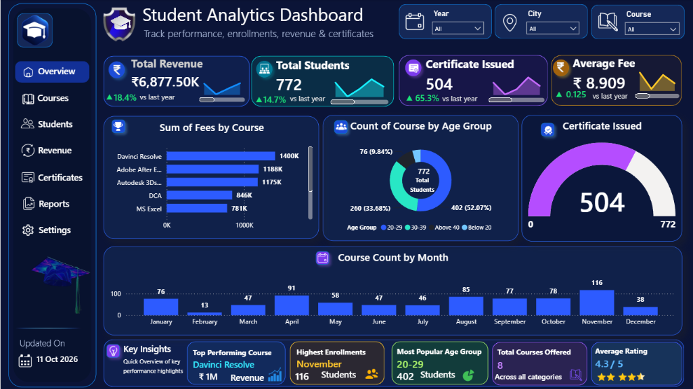

Student Analytics & Revenue Performance
An end-to-end Power BI business intelligence solution tracking enrollment dynamics, course revenue generation, demographic cohorts, and academic certification throughput for ABC Institute.
Dashboard Interface Preview
Switch between the Executive Overview cockpit and the Curriculum view.

.pbix file and open it in Power BI Desktop.
Key Data Insights & Strategic Findings
Core quantitative takeaways supported by the verified dataset.
💰 Course Revenue Concentration
Tuition collections are heavily driven by advanced digital and video production courses. Creative software commands the highest commercial pricing power.
👥 Demographic Cohort Distribution
Analysis of student age segments indicates that early-career upskillers dominate institutional enrollments.
- 20–29 Years (52.07% | 402 Students): Primary learner cohort, consisting of college students and graduates entering digital media fields.
- 30–39 Years (33.68% | 260 Students): Secondary major cohort of mid-career professionals upgrading software proficiencies.
- Above 40 Years (9.84% | 76 Students): Senior specialists and hobbyist learners.
- Below 20 Years (4.41% | 34 Students): School leavers and foundational learners.
📅 Intake Seasonality & Demand Swings
Enrollment volume exhibits strong seasonality throughout the 12-month calendar year.
- Peak Inflow (November): Reaches an all-time high of 116 student enrollments, driven by end-of-year career transition commitments.
- Secondary Inflows: Strong batches in April (91), August (85), and October (78).
- The February Slump: Plummets to a low of just 13 enrollments, representing an 88.8% reduction from peak volume.
Actionable Recommendations for Leadership
Data-backed strategic interventions to optimize revenue and completion throughput.
🎯 1. Address the February Enrollment Trough
Launch targeted "Early Starter" campaigns and bundle discounts (e.g., MS Excel + DCA Career Starter) during December–January to capture enrollments before the February lull.
🎬 2. Expand Creative & Media Offerings
With DaVinci Resolve, After Effects, and 3ds Max accounting for over ₹3.76M in revenue, launch specialized masterclasses (Color Grading, Virtual Production) with premium tuition pricing.
🎓 3. Close the Certification Gap
With 504 certificates issued out of 772 students (65.28%), establish automated mentor check-ins and project submission reminders to help the remaining 268 learners cross the graduation line.
Analytical Methodology & Data Model
Structured schema, clean data pipelines, and verified DAX calculations.
🛠️ Technical Implementation
- Data Modeling: Star-relational schema linking
Personal DetailsandStudent Course Details (2)viaStudent Name. - Power Query (M): Data sanitization, currency type transformations, and conditional grouping for statistical age brackets.
- DAX Formulations: Dynamic YoY growth percentages, KPI sparkline measures, distinct student counters, and conditional formatting.
- Full Methodology: Read the technical documentation in docs/methodology.md.
🔒 Privacy & Compliance Assurance
- Anonymized Records: All metrics, summaries, and charts reflect aggregate cohorts without identifiable PII.
- Verified Calculations: Every KPI on this webpage matches the mathematical measures embedded in the Power BI model.
- File Integrity: The complete
.pbixfile is hosted directly in this repository for full transparency.